Disclaimer
Примеры далее используют React и Styled Components
 +

+

Ilya Lesik
Илья Лесик
Примеры далее используют React и Styled Components
+

Выражения fn`some string here`; называются Tagged Template Literal
Стили будут добавлены в CSSOM с помощью вызова insertRule(...)
<style type="text/css">.eIxVkz{border-radius:3px;...}.kqEuGv{border-radius:3px;...;background:palevioletred;color:white;}</style>
О нет, хипстеры опять хотят переусложнить нашу верстку и изобретают новые абстракции над абстракциями. Нам было так хорошо с ванильным CSS, версткой на таблицах и браузером Netscape Navigator 4. Именно с этого вашего Реакта и начался Майдан.
 WebStorm
+ другие
JetBrains IDE
WebStorm
+ другие
JetBrains IDE
| Package | As Object | As TL | RN Support | Agnostic | Dynamic | Babel plugins | Stars | |
|---|---|---|---|---|---|---|---|---|
| emotion | + | + | + | + | + | 3179 | ||
| JSS | + | + | + | + | + | 3303 | ||
| styled-components | + | + | + | + | 15110 | |||
| aphrodite | + | + | 3971 | |||||
| glamor | + | + | + | 3036 | ||||
| styletron | + | + | + | 2414 |
| Package | Use CSS | Use Inline-Styles | Mount Time (ms) | Rerender time (ms) |
|---|---|---|---|---|
| react (with inline-styles) | - | + | 28.7 | 51.53 |
| react + css | + | + | 38 | 76.34 |
| emotion | + | - | 102.5 | 107.06 |
| JSS | + | - | 310.3 | 340.36 |
| styled-components (v3.1.6) | + | - | 133.73 | 109.17 |
| aphrodite | + | + | 38.05 | 62.39 |
| styletron | + | - | 75.6 | 90.18 |
Production